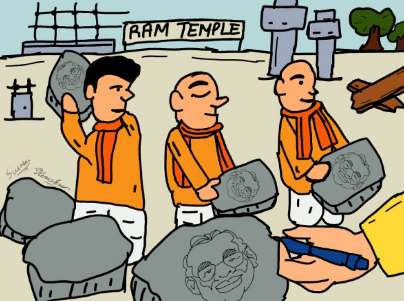
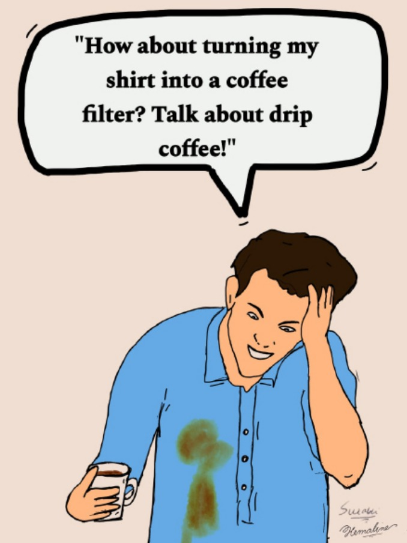

Harvesting Hope: The role of farmers in cultivating change across the country

From the pre-independence era to the present day, protests and resistance movements
have played a pivotal role in shaping the socio-political fabric of the nation.
However, in the current scenario, the impact of agitations and protests has assumed
a new significance, reflecting both the aspirations and challenges of a rapidly evolving society.
At the heart of this phenomenon lies the relentless quest of the people
for justice and equality. Across the length and breadth of the country,
individuals and communities have taken to the streets to voice their grievances,
challenging oppressive systems, and demanding accountability from those in power.
Whether it's farmers rallying against contentious agricultural reforms, students
advocating for educational reforms, or citizens protesting against discriminatory laws,
the underlying message is clear – the voice of the people cannot be silenced.
One of the most striking examples has been the recent farmer’s protest,
which captured the attention of the nation and the world, serving as a poignant
reminder of the power of resistance in the face of injustice. At the crux of this
movement lies a fervent demand for the aforementioned justice and equality for agricultural
workers, whose livelihoods are intricately tied to the land they cultivate. As we delve into the
complexities of this protest, it becomes evident that words and slogans play a pivotal role in galvanizing
collective action, shaping public discourse, and mobilizing support for the cause.
Central to the farmer's protest are a series of demands, chief among them being the implementation
of a legal guarantee for the Minimum Support Price (MSP) for agricultural produce. MSP is a price
that is declared before the harvesting of a crop takes place. If the market price at which the farmers
can sell falls below the MSP, the government steps in to buy the crop from them. However, there is no legal
backing for such ‘support’ and the government decides how much to buy, leaving a dose of uncertainty in the expected income of farmers.
This demand for MSP, and the subsequent protests, symbolizes the farmers' struggle for economic security and fair compensation for their labour,
which has been undermined by market forces and government policies that prioritize profit over people. The rallying cry of "MSP Sarkar, Zindabad!"
reverberates across sites of protests, encapsulating the collective resolve to hold authorities accountable and secure a dignified livelihood for farmers.
Beyond its economic implications, the farmer's protest is imbued with broader socio-political significance, reflected in slogans that speak to the aspirations
and grievances of rural communities. "Jai Kisan, Jai Jawan" echoes the sentiment of solidarity between farmers and soldiers, highlighting their shared struggles
and sacrifices in service of the nation whereas "Inquilab Zindabad" resonates with the spirit of revolution and resistance, invoking the legacy of freedom fighters
who fought against colonial oppression. These slogans serve as a powerful reminder of the enduring legacy of struggle and resilience that defines the Indian ethos.
In addition, the slogan - "No Farmers, No Food" underscores the indispensable contribution of farmers to the nation's food security, challenging prevailing narratives
that marginalize their role in shaping the agricultural landscape.
Slogans act as potent tools for challenging dominant narratives and articulating alternative visions for the future. In the face of government repression and media vilification, slogans serve as a form of resistance, empowering farmers to reclaim their agency, voice their grievances, and assert their demands for justice.
As the farmer's protest continues to unfold, it is imperative that we recognize the transformative power of words and slogans in shaping social movements and advancing the cause of justice. In a world marked by inequality, injustice, and oppression, slogans serve as a shining light, guiding us towards a future where the voices of the marginalized are heard, their rights respected, and their dignity upheld.
In the words of Faiz, "This is how people fight oppression, their ritual isn’t new, nor are my ways new. This is how we always grew flowers in fire, their defeat isn’t new, our victory isn’t new.”
- Aamina Azhar
-->
Let’s Burn Some Toast

Have the words “Everything happens for a reason” ever gotten on your nerves? Well turns out the internet has found a new way to tell us that life takes turns in the most obnoxious ways.
The burnt toast theory—TikTok and the internet’s latest theory on how everything happens for a reason and how every inconvenience is just the universe’s way of protecting you. Take, for instance, something most of us have experienced: burning your breakfast toast before you head to college. You’re frustrated and don’t want to be late to class. But, you take an extra 10 minutes to make another toast. Turns out you soon discover an accident occurred on your usual route during that lost time. Ingrid, the creator of the burnt toast theory believes that the extra time you spent making that toast, has inadvertently protected you from the accident.
So what is it about the theory? A lot of us could say that it’s another repackaged way of saying that much of our lives are out of our control and that we shouldn’t even bother. Someone else could say that it’s a recurring sign that we should have faith in something bigger than us. The burn toast theory provided me with solace during a difficult time in my life. At its core, it helps us believe that sometimes, in life there are things out of our control but also emphasizes the profound impact of seemingly insignificant events.
To me, the underlying message of the burnt toast theory is one of hope and resilience, I can’t help but like it. So, the next time you are late for a class or miss a flight, look at the bigger picture—the burnt toast.
-Saranyaa Ramesh
Student Speak
We appreciate the department of physical education for taking initiative and so much effort to host their fest- KHEL. We had student requests for this event in our September student speak. To see the request addressed is great!
The CIA timetable for certain third year combinations were extremely hard to work with. Two core subjects were placed on the same day consecutively for all the papers making it impossible to focus on each subject.
Please give clarity on the graduation date. The one mentioned in the calendar falls within Ramadan, causing concern among many of the Muslim students.